<!DOCTYPE html>
<html>
	<head>
		<title>Build Logs - v0.1.0.2 alpha</title>
		<meta name="viewport" content="width=device-width, initial-scale=1">
		<link rel="stylesheet" href="../../../css/style.css" type="text/css">
		<script src="../../../js/script.js" type="text/javascript"></script>
	</head>
	
	<body>
		<h1>Build Logs from v0.1.0.2 alpha</h1>
		<hr>
		<pre><a href="../../index.html">Home</a>	<a href="../../versionHistory/v0_1_0_2_alpha/v0_1_0_2.html">Back to Changelog</a></pre>
		<hr>
		<p>Updated as of July 11, 2022 18:41:10</p>
		<button onclick='showAllImages("imgDiv")'>Show all images</button>
		<ul>
			<h2>Build 786: phroton/feature/list-map-input-engine</h2>
				<h3>July 6, 2022 - 14:39:42</h3>
				<pre>||=== Build: default in militia2d (compiler: GNU GCC Compiler) ===|
\Militia SFML\engine\resource-engine.cpp||In member function 'void Dzergero::ResourceEngine::ListTexture()':|
\Militia SFML\engine\resource-engine.cpp|65|error: expected ';' before 'std'|
\Militia SFML\engine\resource-engine.cpp|68|error: 'itr' was not declared in this scope|
\Militia SFML\engine\resource-engine.cpp|68|note: suggested alternative: 'itoa'|
||=== Build finished: 2 error(s), 0 warning(s) (0 minute(s), 32 second(s)) ===|
</pre>
				<h3>July 6, 2022 - 14:40:58</h3>
				<pre>||=== Build: default in militia2d (compiler: GNU GCC Compiler) ===|
\Militia SFML\engine\resource-engine.cpp||In member function 'void Dzergero::ResourceEngine::ListTexture()':|
\Militia SFML\engine\resource-engine.cpp|69|error: no match for 'operator<<' (operand types are 'std::basic_ostream<code><char></code>' and 'sf::Texture')|
C:\Program Files\CodeBlocks\MinGW\lib\gcc\x86_64-w64-mingw32\8.1.0\include\c++\ostream|108|note: candidate: 'std::basic_ostream<_CharT, _Traits>::__ostream_type& std::basic_ostream<_CharT, _Traits>::operator<<(std::basic_ostream<_CharT, _Traits>::__ostream_type& (*)(std::basic_ostream<_CharT, _Traits>::__ostream_type&)) [with _CharT = char; _Traits = std::char_traits<code><char></code>; std::basic_ostream<_CharT, _Traits>::__ostream_type = std::basic_ostream<code><char></code>]'|
C:\Program Files\CodeBlocks\MinGW\lib\gcc\x86_64-w64-mingw32\8.1.0\include\c++\ostream|108|note:   no known conversion for argument 1 from 'sf::Texture' to 'std::basic_ostream<code><char></code>::__ostream_type& (*)(std::basic_ostream<code><char></code>::__ostream_type&)' {aka 'std::basic_ostream<code><char></code>& (*)(std::basic_ostream<code><char></code>&)'}|
C:\Program Files\CodeBlocks\MinGW\lib\gcc\x86_64-w64-mingw32\8.1.0\include\c++\ostream|117|note: candidate: 'std::basic_ostream<_CharT, _Traits>::__ostream_type& std::basic_ostream<_CharT, _Traits>::operator<<(std::basic_ostream<_CharT, _Traits>::__ios_type& (*)(std::basic_ostream<_CharT, _Traits>::__ios_type&)) [with _CharT = char; _Traits = std::char_traits<code><char></code>; std::basic_ostream<_CharT, _Traits>::__ostream_type = std::basic_ostream<code><char></code>; std::basic_ostream<_CharT, _Traits>::__ios_type = std::basic_ios<code><char></code>]'|
C:\Program Files\CodeBlocks\MinGW\lib\gcc\x86_64-w64-mingw32\8.1.0\include\c++\ostream|117|note:   no known conversion for argument 1 from 'sf::Texture' to 'std::basic_ostream<code><char></code>::__ios_type& (*)(std::basic_ostream<code><char></code>::__ios_type&)' {aka 'std::basic_ios<code><char></code>& (*)(std::basic_ios<code><char></code>&)'}|
C:\Program Files\CodeBlocks\MinGW\lib\gcc\x86_64-w64-mingw32\8.1.0\include\c++\ostream|127|note: candidate: 'std::basic_ostream<_CharT, _Traits>::__ostream_type& std::basic_ostream<_CharT, _Traits>::operator<<(std::ios_base& (*)(std::ios_base&)) [with _CharT = char; _Traits = std::char_traits<code><char></code>; std::basic_ostream<_CharT, _Traits>::__ostream_type = std::basic_ostream<code><char></code>]'|
C:\Program Files\CodeBlocks\MinGW\lib\gcc\x86_64-w64-mingw32\8.1.0\include\c++\ostream|127|note:   no known conversion for argument 1 from 'sf::Texture' to 'std::ios_base& (*)(std::ios_base&)'|
C:\Program Files\CodeBlocks\MinGW\lib\gcc\x86_64-w64-mingw32\8.1.0\include\c++\ostream|166|note: candidate: 'std::basic_ostream<_CharT, _Traits>::__ostream_type& std::basic_ostream<_CharT, _Traits>::operator<<(long int) [with _CharT = char; _Traits = std::char_traits<code><char></code>; std::basic_ostream<_CharT, _Traits>::__ostream_type = std::basic_ostream<code><char></code>]'|
C:\Program Files\CodeBlocks\MinGW\lib\gcc\x86_64-w64-mingw32\8.1.0\include\c++\ostream|166|note:   no known conversion for argument 1 from 'sf::Texture' to 'long int'|
C:\Program Files\CodeBlocks\MinGW\lib\gcc\x86_64-w64-mingw32\8.1.0\include\c++\ostream|170|note: candidate: 'std::basic_ostream<_CharT, _Traits>::__ostream_type& std::basic_ostream<_CharT, _Traits>::operator<<(long unsigned int) [with _CharT = char; _Traits = std::char_traits<code><char></code>; std::basic_ostream<_CharT, _Traits>::__ostream_type = std::basic_ostream<code><char></code>]'|
C:\Program Files\CodeBlocks\MinGW\lib\gcc\x86_64-w64-mingw32\8.1.0\include\c++\ostream|170|note:   no known conversion for argument 1 from 'sf::Texture' to 'long unsigned int'|
C:\Program Files\CodeBlocks\MinGW\lib\gcc\x86_64-w64-mingw32\8.1.0\include\c++\ostream|174|note: candidate: 'std::basic_ostream<_CharT, _Traits>::__ostream_type& std::basic_ostream<_CharT, _Traits>::operator<<(bool) [with _CharT = char; _Traits = std::char_traits<code><char></code>; std::basic_ostream<_CharT, _Traits>::__ostream_type = std::basic_ostream<code><char></code>]'|
C:\Program Files\CodeBlocks\MinGW\lib\gcc\x86_64-w64-mingw32\8.1.0\include\c++\ostream|174|note:   no known conversion for argument 1 from 'sf::Texture' to 'bool'|
C:\Program Files\CodeBlocks\MinGW\lib\gcc\x86_64-w64-mingw32\8.1.0\include\c++\bits\ostream.tcc|91|note: candidate: 'std::basic_ostream<_CharT, _Traits>& std::basic_ostream<_CharT, _Traits>::operator<<(short int) [with _CharT = char; _Traits = std::char_traits<code><char></code>]'|
C:\Program Files\CodeBlocks\MinGW\lib\gcc\x86_64-w64-mingw32\8.1.0\include\c++\bits\ostream.tcc|91|note:   no known conversion for argument 1 from 'sf::Texture' to 'short int'|
C:\Program Files\CodeBlocks\MinGW\lib\gcc\x86_64-w64-mingw32\8.1.0\include\c++\ostream|181|note: candidate: 'std::basic_ostream<_CharT, _Traits>::__ostream_type& std::basic_ostream<_CharT, _Traits>::operator<<(short unsigned int) [with _CharT = char; _Traits = std::char_traits<code><char></code>; std::basic_ostream<_CharT, _Traits>::__ostream_type = std::basic_ostream<code><char></code>]'|
C:\Program Files\CodeBlocks\MinGW\lib\gcc\x86_64-w64-mingw32\8.1.0\include\c++\ostream|181|note:   no known conversion for argument 1 from 'sf::Texture' to 'short unsigned int'|
C:\Program Files\CodeBlocks\MinGW\lib\gcc\x86_64-w64-mingw32\8.1.0\include\c++\bits\ostream.tcc|105|note: candidate: 'std::basic_ostream<_CharT, _Traits>& std::basic_ostream<_CharT, _Traits>::operator<<(int) [with _CharT = char; _Traits = std::char_traits<code><char></code>]'|
C:\Program Files\CodeBlocks\MinGW\lib\gcc\x86_64-w64-mingw32\8.1.0\include\c++\bits\ostream.tcc|105|note:   no known conversion for argument 1 from 'sf::Texture' to 'int'|
C:\Program Files\CodeBlocks\MinGW\lib\gcc\x86_64-w64-mingw32\8.1.0\include\c++\ostream|192|note: candidate: 'std::basic_ostream<_CharT, _Traits>::__ostream_type& std::basic_ostream<_CharT, _Traits>::operator<<(unsigned int) [with _CharT = char; _Traits = std::char_traits<code><char></code>; std::basic_ostream<_CharT, _Traits>::__ostream_type = std::basic_ostream<code><char></code>]'|
C:\Program Files\CodeBlocks\MinGW\lib\gcc\x86_64-w64-mingw32\8.1.0\include\c++\ostream|192|note:   no known conversion for argument 1 from 'sf::Texture' to 'unsigned int'|
C:\Program Files\CodeBlocks\MinGW\lib\gcc\x86_64-w64-mingw32\8.1.0\include\c++\ostream|201|note: candidate: 'std::basic_ostream<_CharT, _Traits>::__ostream_type& std::basic_ostream<_CharT, _Traits>::operator<<(long long int) [with _CharT = char; _Traits = std::char_traits<code><char></code>; std::basic_ostream<_CharT, _Traits>::__ostream_type = std::basic_ostream<code><char></code>]'|
C:\Program Files\CodeBlocks\MinGW\lib\gcc\x86_64-w64-mingw32\8.1.0\include\c++\ostream|201|note:   no known conversion for argument 1 from 'sf::Texture' to 'long long int'|
C:\Program Files\CodeBlocks\MinGW\lib\gcc\x86_64-w64-mingw32\8.1.0\include\c++\ostream|205|note: candidate: 'std::basic_ostream<_CharT, _Traits>::__ostream_type& std::basic_ostream<_CharT, _Traits>::operator<<(long long unsigned int) [with _CharT = char; _Traits = std::char_traits<code><char></code>; std::basic_ostream<_CharT, _Traits>::__ostream_type = std::basic_ostream<code><char></code>]'|
C:\Program Files\CodeBlocks\MinGW\lib\gcc\x86_64-w64-mingw32\8.1.0\include\c++\ostream|205|note:   no known conversion for argument 1 from 'sf::Texture' to 'long long unsigned int'|
C:\Program Files\CodeBlocks\MinGW\lib\gcc\x86_64-w64-mingw32\8.1.0\include\c++\ostream|220|note: candidate: 'std::basic_ostream<_CharT, _Traits>::__ostream_type& std::basic_ostream<_CharT, _Traits>::operator<<(double) [with _CharT = char; _Traits = std::char_traits<code><char></code>; std::basic_ostream<_CharT, _Traits>::__ostream_type = std::basic_ostream<code><char></code>]'|
C:\Program Files\CodeBlocks\MinGW\lib\gcc\x86_64-w64-mingw32\8.1.0\include\c++\ostream|220|note:   no known conversion for argument 1 from 'sf::Texture' to 'double'|
C:\Program Files\CodeBlocks\MinGW\lib\gcc\x86_64-w64-mingw32\8.1.0\include\c++\ostream|224|note: candidate: 'std::basic_ostream<_CharT, _Traits>::__ostream_type& std::basic_ostream<_CharT, _Traits>::operator<<(float) [with _CharT = char; _Traits = std::char_traits<code><char></code>; std::basic_ostream<_CharT, _Traits>::__ostream_type = std::basic_ostream<code><char></code>]'|
C:\Program Files\CodeBlocks\MinGW\lib\gcc\x86_64-w64-mingw32\8.1.0\include\c++\ostream|224|note:   no known conversion for argument 1 from 'sf::Texture' to 'float'|
C:\Program Files\CodeBlocks\MinGW\lib\gcc\x86_64-w64-mingw32\8.1.0\include\c++\ostream|232|note: candidate: 'std::basic_ostream<_CharT, _Traits>::__ostream_type& std::basic_ostream<_CharT, _Traits>::operator<<(long double) [with _CharT = char; _Traits = std::char_traits<code><char></code>; std::basic_ostream<_CharT, _Traits>::__ostream_type = std::basic_ostream<code><char></code>]'|
C:\Program Files\CodeBlocks\MinGW\lib\gcc\x86_64-w64-mingw32\8.1.0\include\c++\ostream|232|note:   no known conversion for argument 1 from 'sf::Texture' to 'long double'|
C:\Program Files\CodeBlocks\MinGW\lib\gcc\x86_64-w64-mingw32\8.1.0\include\c++\ostream|245|note: candidate: 'std::basic_ostream<_CharT, _Traits>::__ostream_type& std::basic_ostream<_CharT, _Traits>::operator<<(const void*) [with _CharT = char; _Traits = std::char_traits<code><char></code>; std::basic_ostream<_CharT, _Traits>::__ostream_type = std::basic_ostream<code><char></code>]'|
C:\Program Files\CodeBlocks\MinGW\lib\gcc\x86_64-w64-mingw32\8.1.0\include\c++\ostream|245|note:   no known conversion for argument 1 from 'sf::Texture' to 'const void*'|
C:\Program Files\CodeBlocks\MinGW\lib\gcc\x86_64-w64-mingw32\8.1.0\include\c++\bits\ostream.tcc|119|note: candidate: 'std::basic_ostream<_CharT, _Traits>& std::basic_ostream<_CharT, _Traits>::operator<<(std::basic_ostream<_CharT, _Traits>::__streambuf_type*) [with _CharT = char; _Traits = std::char_traits<code><char></code>; std::basic_ostream<_CharT, _Traits>::__streambuf_type = std::basic_streambuf<code><char></code>]'|
C:\Program Files\CodeBlocks\MinGW\lib\gcc\x86_64-w64-mingw32\8.1.0\include\c++\bits\ostream.tcc|119|note:   no known conversion for argument 1 from 'sf::Texture' to 'std::basic_ostream<code><char></code>::__streambuf_type*' {aka 'std::basic_streambuf<code><char></code>*'}|
C:\Program Files\CodeBlocks\MinGW\lib\gcc\x86_64-w64-mingw32\8.1.0\include\c++\string_view|545|note: candidate: 'template<class _CharT, class _Traits> std::basic_ostream<_CharT, _Traits>& std::operator<<(std::basic_ostream<_CharT, _Traits>&, std::basic_string_view<_CharT, _Traits>)'|
C:\Program Files\CodeBlocks\MinGW\lib\gcc\x86_64-w64-mingw32\8.1.0\include\c++\string_view|545|note:   template argument deduction/substitution failed:|
\Militia SFML\engine\resource-engine.cpp|69|note:   'sf::Texture' is not derived from 'std::basic_string_view<_CharT, _Traits>'|
C:\Program Files\CodeBlocks\MinGW\lib\gcc\x86_64-w64-mingw32\8.1.0\include\c++\bits\basic_string.h|6284|note: candidate: 'template<class _CharT, class _Traits, class _Alloc> std::basic_ostream<_CharT, _Traits>& std::operator<<(std::basic_ostream<_CharT, _Traits>&, const std::__cxx11::basic_string<_CharT, _Traits, _Alloc>&)'|
C:\Program Files\CodeBlocks\MinGW\lib\gcc\x86_64-w64-mingw32\8.1.0\include\c++\bits\basic_string.h|6284|note:   template argument deduction/substitution failed:|
\Militia SFML\engine\resource-engine.cpp|69|note:   'sf::Texture' is not derived from 'const std::__cxx11::basic_string<_CharT, _Traits, _Alloc>'|
C:\Program Files\CodeBlocks\MinGW\lib\gcc\x86_64-w64-mingw32\8.1.0\include\c++\system_error|217|note: candidate: 'template<class _CharT, class _Traits> std::basic_ostream<_CharT, _Traits>& std::operator<<(std::basic_ostream<_CharT, _Traits>&, const std::error_code&)'|
C:\Program Files\CodeBlocks\MinGW\lib\gcc\x86_64-w64-mingw32\8.1.0\include\c++\system_error|217|note:   template argument deduction/substitution failed:|
\Militia SFML\engine\resource-engine.cpp|69|note:   cannot convert 'itr.std::_Rb_tree_iterator<std::pair<const std::__cxx11::basic_string<code><char></code>, sf::Texture> >::operator->()->std::pair<const std::__cxx11::basic_string<code><char></code>, sf::Texture>::second' (type 'sf::Texture') to type 'const std::error_code&'|
C:\Program Files\CodeBlocks\MinGW\lib\gcc\x86_64-w64-mingw32\8.1.0\include\c++\ostream|497|note: candidate: 'template<class _CharT, class _Traits> std::basic_ostream<_CharT, _Traits>& std::operator<<(std::basic_ostream<_CharT, _Traits>&, _CharT)'|
C:\Program Files\CodeBlocks\MinGW\lib\gcc\x86_64-w64-mingw32\8.1.0\include\c++\ostream|497|note:   template argument deduction/substitution failed:|
\Militia SFML\engine\resource-engine.cpp|69|note:   deduced conflicting types for parameter '_CharT' ('char' and 'sf::Texture')|
C:\Program Files\CodeBlocks\MinGW\lib\gcc\x86_64-w64-mingw32\8.1.0\include\c++\ostream|502|note: candidate: 'template<class _CharT, class _Traits> std::basic_ostream<_CharT, _Traits>& std::operator<<(std::basic_ostream<_CharT, _Traits>&, char)'|
C:\Program Files\CodeBlocks\MinGW\lib\gcc\x86_64-w64-mingw32\8.1.0\include\c++\ostream|502|note:   template argument deduction/substitution failed:|
\Militia SFML\engine\resource-engine.cpp|69|note:   cannot convert 'itr.std::_Rb_tree_iterator<std::pair<const std::__cxx11::basic_string<code><char></code>, sf::Texture> >::operator->()->std::pair<const std::__cxx11::basic_string<code><char></code>, sf::Texture>::second' (type 'sf::Texture') to type 'char'|
C:\Program Files\CodeBlocks\MinGW\lib\gcc\x86_64-w64-mingw32\8.1.0\include\c++\ostream|508|note: candidate: 'template<class _Traits> std::basic_ostream<char, _Traits>& std::operator<<(std::basic_ostream<char, _Traits>&, char)'|
C:\Program Files\CodeBlocks\MinGW\lib\gcc\x86_64-w64-mingw32\8.1.0\include\c++\ostream|508|note:   template argument deduction/substitution failed:|
\Militia SFML\engine\resource-engine.cpp|69|note:   cannot convert 'itr.std::_Rb_tree_iterator<std::pair<const std::__cxx11::basic_string<code><char></code>, sf::Texture> >::operator->()->std::pair<const std::__cxx11::basic_string<code><char></code>, sf::Texture>::second' (type 'sf::Texture') to type 'char'|
C:\Program Files\CodeBlocks\MinGW\lib\gcc\x86_64-w64-mingw32\8.1.0\include\c++\ostream|514|note: candidate: 'template<class _Traits> std::basic_ostream<char, _Traits>& std::operator<<(std::basic_ostream<char, _Traits>&, signed char)'|
C:\Program Files\CodeBlocks\MinGW\lib\gcc\x86_64-w64-mingw32\8.1.0\include\c++\ostream|514|note:   template argument deduction/substitution failed:|
\Militia SFML\engine\resource-engine.cpp|69|note:   cannot convert 'itr.std::_Rb_tree_iterator<std::pair<const std::__cxx11::basic_string<code><char></code>, sf::Texture> >::operator->()->std::pair<const std::__cxx11::basic_string<code><char></code>, sf::Texture>::second' (type 'sf::Texture') to type 'signed char'|
C:\Program Files\CodeBlocks\MinGW\lib\gcc\x86_64-w64-mingw32\8.1.0\include\c++\ostream|519|note: candidate: 'template<class _Traits> std::basic_ostream<char, _Traits>& std::operator<<(std::basic_ostream<char, _Traits>&, unsigned char)'|
C:\Program Files\CodeBlocks\MinGW\lib\gcc\x86_64-w64-mingw32\8.1.0\include\c++\ostream|519|note:   template argument deduction/substitution failed:|
\Militia SFML\engine\resource-engine.cpp|69|note:   cannot convert 'itr.std::_Rb_tree_iterator<std::pair<const std::__cxx11::basic_string<code><char></code>, sf::Texture> >::operator->()->std::pair<const std::__cxx11::basic_string<code><char></code>, sf::Texture>::second' (type 'sf::Texture') to type 'unsigned char'|
C:\Program Files\CodeBlocks\MinGW\lib\gcc\x86_64-w64-mingw32\8.1.0\include\c++\ostream|539|note: candidate: 'template<class _CharT, class _Traits> std::basic_ostream<_CharT, _Traits>& std::operator<<(std::basic_ostream<_CharT, _Traits>&, const _CharT*)'|
C:\Program Files\CodeBlocks\MinGW\lib\gcc\x86_64-w64-mingw32\8.1.0\include\c++\ostream|539|note:   template argument deduction/substitution failed:|
\Militia SFML\engine\resource-engine.cpp|69|note:   mismatched types 'const _CharT*' and 'sf::Texture'|
C:\Program Files\CodeBlocks\MinGW\lib\gcc\x86_64-w64-mingw32\8.1.0\include\c++\bits\ostream.tcc|321|note: candidate: 'template<class _CharT, class _Traits> std::basic_ostream<_CharT, _Traits>& std::operator<<(std::basic_ostream<_CharT, _Traits>&, const char*)'|
C:\Program Files\CodeBlocks\MinGW\lib\gcc\x86_64-w64-mingw32\8.1.0\include\c++\bits\ostream.tcc|321|note:   template argument deduction/substitution failed:|
\Militia SFML\engine\resource-engine.cpp|69|note:   cannot convert 'itr.std::_Rb_tree_iterator<std::pair<const std::__cxx11::basic_string<code><char></code>, sf::Texture> >::operator->()->std::pair<const std::__cxx11::basic_string<code><char></code>, sf::Texture>::second' (type 'sf::Texture') to type 'const char*'|
C:\Program Files\CodeBlocks\MinGW\lib\gcc\x86_64-w64-mingw32\8.1.0\include\c++\ostream|556|note: candidate: 'template<class _Traits> std::basic_ostream<char, _Traits>& std::operator<<(std::basic_ostream<char, _Traits>&, const char*)'|
C:\Program Files\CodeBlocks\MinGW\lib\gcc\x86_64-w64-mingw32\8.1.0\include\c++\ostream|556|note:   template argument deduction/substitution failed:|
\Militia SFML\engine\resource-engine.cpp|69|note:   cannot convert 'itr.std::_Rb_tree_iterator<std::pair<const std::__cxx11::basic_string<code><char></code>, sf::Texture> >::operator->()->std::pair<const std::__cxx11::basic_string<code><char></code>, sf::Texture>::second' (type 'sf::Texture') to type 'const char*'|
C:\Program Files\CodeBlocks\MinGW\lib\gcc\x86_64-w64-mingw32\8.1.0\include\c++\ostream|569|note: candidate: 'template<class _Traits> std::basic_ostream<char, _Traits>& std::operator<<(std::basic_ostream<char, _Traits>&, const signed char*)'|
C:\Program Files\CodeBlocks\MinGW\lib\gcc\x86_64-w64-mingw32\8.1.0\include\c++\ostream|569|note:   template argument deduction/substitution failed:|
\Militia SFML\engine\resource-engine.cpp|69|note:   cannot convert 'itr.std::_Rb_tree_iterator<std::pair<const std::__cxx11::basic_string<code><char></code>, sf::Texture> >::operator->()->std::pair<const std::__cxx11::basic_string<code><char></code>, sf::Texture>::second' (type 'sf::Texture') to type 'const signed char*'|
C:\Program Files\CodeBlocks\MinGW\lib\gcc\x86_64-w64-mingw32\8.1.0\include\c++\ostream|574|note: candidate: 'template<class _Traits> std::basic_ostream<char, _Traits>& std::operator<<(std::basic_ostream<char, _Traits>&, const unsigned char*)'|
C:\Program Files\CodeBlocks\MinGW\lib\gcc\x86_64-w64-mingw32\8.1.0\include\c++\ostream|574|note:   template argument deduction/substitution failed:|
\Militia SFML\engine\resource-engine.cpp|69|note:   cannot convert 'itr.std::_Rb_tree_iterator<std::pair<const std::__cxx11::basic_string<code><char></code>, sf::Texture> >::operator->()->std::pair<const std::__cxx11::basic_string<code><char></code>, sf::Texture>::second' (type 'sf::Texture') to type 'const unsigned char*'|
C:\Program Files\CodeBlocks\MinGW\lib\gcc\x86_64-w64-mingw32\8.1.0\include\c++\ostream|682|note: candidate: 'template<class _Ostream, class _Tp> typename std::enable_if<std::__and_<std::__not_<std::is_lvalue_reference<_Tp> >, std::__is_convertible_to_basic_ostream<_Ostream>, std::__is_insertable<typename std::__is_convertible_to_basic_ostream<_Tp>::__ostream_type, const _Tp&, void> >::value, typename std::__is_convertible_to_basic_ostream<_Tp>::__ostream_type>::type std::operator<<(_Ostream&&, const _Tp&)'|
C:\Program Files\CodeBlocks\MinGW\lib\gcc\x86_64-w64-mingw32\8.1.0\include\c++\ostream|682|note:   template argument deduction/substitution failed:|
\Militia SFML\engine\resource-engine.cpp|69|required from here|
C:\Program Files\CodeBlocks\MinGW\lib\gcc\x86_64-w64-mingw32\8.1.0\include\c++\ostream|682|error: no type named 'type' in 'struct std::enable_if<false, std::basic_ostream<code><char></code>&>'|
||=== Build finished: 2 error(s), 1 warning(s) (0 minute(s), 18 second(s)) ===|
</pre>
				<h3>July 6, 2022 - 14:46:19</h3>
				<li>Same error as above.</li>
				<h3>July 6, 2022 - 14:52:18</h3>
				<pre>||=== Build: default in militia2d (compiler: GNU GCC Compiler) ===|
\Militia SFML\engine\resource-engine.h|25|error: declaration of 'operator<<' as non-function|
\Militia SFML\engine\resource-engine.h|25|error: expected ';' at end of member declaration|
\Militia SFML\engine\resource-engine.h|25|error: expected ')' before '&' token|
\Militia SFML\engine\resource-engine.h|25|error: declaration of 'operator<<' as non-function|
\Militia SFML\engine\resource-engine.h|25|error: expected ';' at end of member declaration|
\Militia SFML\engine\resource-engine.h|25|error: expected ')' before '&' token|
\Militia SFML\engine\resource-engine.h|25|error: declaration of 'operator<<' as non-function|
\Militia SFML\engine\resource-engine.h|25|error: expected ';' at end of member declaration|
\Militia SFML\engine\resource-engine.h|25|error: expected ')' before '&' token|
\Militia SFML\engine\resource-engine.h|25|error: declaration of 'operator<<' as non-function|
\Militia SFML\engine\resource-engine.h|25|error: expected ';' at end of member declaration|
\Militia SFML\engine\resource-engine.h|25|error: expected ')' before '&' token|
||=== Build failed: 12 error(s), 0 warning(s) (0 minute(s), 18 second(s)) ===|
</pre>
				<h3>July 6, 2022 - 14:55:34</h3>
				<pre>||=== Build: default in militia2d (compiler: GNU GCC Compiler) ===|
C\Militia SFML\engine\resource-engine.cpp||In member function 'void Dzergero::ResourceEngine::ListTexture()':|
C\Militia SFML\engine\resource-engine.cpp|70|error: no match for 'operator<<' (operand types are 'std::basic_ostream<code><char></code>' and 'sf::Texture')|
C:\Program Files\CodeBlocks\MinGW\lib\gcc\x86_64-w64-mingw32\8.1.0\include\c++\ostream|108|note: candidate: 'std::basic_ostream<_CharT, _Traits>::__ostream_type& std::basic_ostream<_CharT, _Traits>::operator<<(std::basic_ostream<_CharT, _Traits>::__ostream_type& (*)(std::basic_ostream<_CharT, _Traits>::__ostream_type&)) [with _CharT = char; _Traits = std::char_traits<code><char></code>; std::basic_ostream<_CharT, _Traits>::__ostream_type = std::basic_ostream<code><char></code>]'|
C:\Program Files\CodeBlocks\MinGW\lib\gcc\x86_64-w64-mingw32\8.1.0\include\c++\ostream|108|note:   no known conversion for argument 1 from 'sf::Texture' to 'std::basic_ostream<code><char></code>::__ostream_type& (*)(std::basic_ostream<code><char></code>::__ostream_type&)' {aka 'std::basic_ostream<code><char></code>& (*)(std::basic_ostream<code><char></code>&)'}|
C:\Program Files\CodeBlocks\MinGW\lib\gcc\x86_64-w64-mingw32\8.1.0\include\c++\ostream|117|note: candidate: 'std::basic_ostream<_CharT, _Traits>::__ostream_type& std::basic_ostream<_CharT, _Traits>::operator<<(std::basic_ostream<_CharT, _Traits>::__ios_type& (*)(std::basic_ostream<_CharT, _Traits>::__ios_type&)) [with _CharT = char; _Traits = std::char_traits<code><char></code>; std::basic_ostream<_CharT, _Traits>::__ostream_type = std::basic_ostream<code><char></code>; std::basic_ostream<_CharT, _Traits>::__ios_type = std::basic_ios<code><char></code>]'|
C:\Program Files\CodeBlocks\MinGW\lib\gcc\x86_64-w64-mingw32\8.1.0\include\c++\ostream|117|note:   no known conversion for argument 1 from 'sf::Texture' to 'std::basic_ostream<code><char></code>::__ios_type& (*)(std::basic_ostream<code><char></code>::__ios_type&)' {aka 'std::basic_ios<code><char></code>& (*)(std::basic_ios<code><char></code>&)'}|
C:\Program Files\CodeBlocks\MinGW\lib\gcc\x86_64-w64-mingw32\8.1.0\include\c++\ostream|127|note: candidate: 'std::basic_ostream<_CharT, _Traits>::__ostream_type& std::basic_ostream<_CharT, _Traits>::operator<<(std::ios_base& (*)(std::ios_base&)) [with _CharT = char; _Traits = std::char_traits<code><char></code>; std::basic_ostream<_CharT, _Traits>::__ostream_type = std::basic_ostream<code><char></code>]'|
C:\Program Files\CodeBlocks\MinGW\lib\gcc\x86_64-w64-mingw32\8.1.0\include\c++\ostream|127|note:   no known conversion for argument 1 from 'sf::Texture' to 'std::ios_base& (*)(std::ios_base&)'|
C:\Program Files\CodeBlocks\MinGW\lib\gcc\x86_64-w64-mingw32\8.1.0\include\c++\ostream|166|note: candidate: 'std::basic_ostream<_CharT, _Traits>::__ostream_type& std::basic_ostream<_CharT, _Traits>::operator<<(long int) [with _CharT = char; _Traits = std::char_traits<code><char></code>; std::basic_ostream<_CharT, _Traits>::__ostream_type = std::basic_ostream<code><char></code>]'|
C:\Program Files\CodeBlocks\MinGW\lib\gcc\x86_64-w64-mingw32\8.1.0\include\c++\ostream|166|note:   no known conversion for argument 1 from 'sf::Texture' to 'long int'|
C:\Program Files\CodeBlocks\MinGW\lib\gcc\x86_64-w64-mingw32\8.1.0\include\c++\ostream|170|note: candidate: 'std::basic_ostream<_CharT, _Traits>::__ostream_type& std::basic_ostream<_CharT, _Traits>::operator<<(long unsigned int) [with _CharT = char; _Traits = std::char_traits<code><char></code>; std::basic_ostream<_CharT, _Traits>::__ostream_type = std::basic_ostream<code><char></code>]'|
C:\Program Files\CodeBlocks\MinGW\lib\gcc\x86_64-w64-mingw32\8.1.0\include\c++\ostream|170|note:   no known conversion for argument 1 from 'sf::Texture' to 'long unsigned int'|
C:\Program Files\CodeBlocks\MinGW\lib\gcc\x86_64-w64-mingw32\8.1.0\include\c++\ostream|174|note: candidate: 'std::basic_ostream<_CharT, _Traits>::__ostream_type& std::basic_ostream<_CharT, _Traits>::operator<<(bool) [with _CharT = char; _Traits = std::char_traits<code><char></code>; std::basic_ostream<_CharT, _Traits>::__ostream_type = std::basic_ostream<code><char></code>]'|
C:\Program Files\CodeBlocks\MinGW\lib\gcc\x86_64-w64-mingw32\8.1.0\include\c++\ostream|174|note:   no known conversion for argument 1 from 'sf::Texture' to 'bool'|
C:\Program Files\CodeBlocks\MinGW\lib\gcc\x86_64-w64-mingw32\8.1.0\include\c++\bits\ostream.tcc|91|note: candidate: 'std::basic_ostream<_CharT, _Traits>& std::basic_ostream<_CharT, _Traits>::operator<<(short int) [with _CharT = char; _Traits = std::char_traits<code><char></code>]'|
C:\Program Files\CodeBlocks\MinGW\lib\gcc\x86_64-w64-mingw32\8.1.0\include\c++\bits\ostream.tcc|91|note:   no known conversion for argument 1 from 'sf::Texture' to 'short int'|
C:\Program Files\CodeBlocks\MinGW\lib\gcc\x86_64-w64-mingw32\8.1.0\include\c++\ostream|181|note: candidate: 'std::basic_ostream<_CharT, _Traits>::__ostream_type& std::basic_ostream<_CharT, _Traits>::operator<<(short unsigned int) [with _CharT = char; _Traits = std::char_traits<code><char></code>; std::basic_ostream<_CharT, _Traits>::__ostream_type = std::basic_ostream<code><char></code>]'|
C:\Program Files\CodeBlocks\MinGW\lib\gcc\x86_64-w64-mingw32\8.1.0\include\c++\ostream|181|note:   no known conversion for argument 1 from 'sf::Texture' to 'short unsigned int'|
C:\Program Files\CodeBlocks\MinGW\lib\gcc\x86_64-w64-mingw32\8.1.0\include\c++\bits\ostream.tcc|105|note: candidate: 'std::basic_ostream<_CharT, _Traits>& std::basic_ostream<_CharT, _Traits>::operator<<(int) [with _CharT = char; _Traits = std::char_traits<code><char></code>]'|
C:\Program Files\CodeBlocks\MinGW\lib\gcc\x86_64-w64-mingw32\8.1.0\include\c++\bits\ostream.tcc|105|note:   no known conversion for argument 1 from 'sf::Texture' to 'int'|
C:\Program Files\CodeBlocks\MinGW\lib\gcc\x86_64-w64-mingw32\8.1.0\include\c++\ostream|192|note: candidate: 'std::basic_ostream<_CharT, _Traits>::__ostream_type& std::basic_ostream<_CharT, _Traits>::operator<<(unsigned int) [with _CharT = char; _Traits = std::char_traits<code><char></code>; std::basic_ostream<_CharT, _Traits>::__ostream_type = std::basic_ostream<code><char></code>]'|
C:\Program Files\CodeBlocks\MinGW\lib\gcc\x86_64-w64-mingw32\8.1.0\include\c++\ostream|192|note:   no known conversion for argument 1 from 'sf::Texture' to 'unsigned int'|
C:\Program Files\CodeBlocks\MinGW\lib\gcc\x86_64-w64-mingw32\8.1.0\include\c++\ostream|201|note: candidate: 'std::basic_ostream<_CharT, _Traits>::__ostream_type& std::basic_ostream<_CharT, _Traits>::operator<<(long long int) [with _CharT = char; _Traits = std::char_traits<code><char></code>; std::basic_ostream<_CharT, _Traits>::__ostream_type = std::basic_ostream<code><char></code>]'|
C:\Program Files\CodeBlocks\MinGW\lib\gcc\x86_64-w64-mingw32\8.1.0\include\c++\ostream|201|note:   no known conversion for argument 1 from 'sf::Texture' to 'long long int'|
C:\Program Files\CodeBlocks\MinGW\lib\gcc\x86_64-w64-mingw32\8.1.0\include\c++\ostream|205|note: candidate: 'std::basic_ostream<_CharT, _Traits>::__ostream_type& std::basic_ostream<_CharT, _Traits>::operator<<(long long unsigned int) [with _CharT = char; _Traits = std::char_traits<code><char></code>; std::basic_ostream<_CharT, _Traits>::__ostream_type = std::basic_ostream<code><char></code>]'|
C:\Program Files\CodeBlocks\MinGW\lib\gcc\x86_64-w64-mingw32\8.1.0\include\c++\ostream|205|note:   no known conversion for argument 1 from 'sf::Texture' to 'long long unsigned int'|
C:\Program Files\CodeBlocks\MinGW\lib\gcc\x86_64-w64-mingw32\8.1.0\include\c++\ostream|220|note: candidate: 'std::basic_ostream<_CharT, _Traits>::__ostream_type& std::basic_ostream<_CharT, _Traits>::operator<<(double) [with _CharT = char; _Traits = std::char_traits<code><char></code>; std::basic_ostream<_CharT, _Traits>::__ostream_type = std::basic_ostream<code><char></code>]'|
C:\Program Files\CodeBlocks\MinGW\lib\gcc\x86_64-w64-mingw32\8.1.0\include\c++\ostream|220|note:   no known conversion for argument 1 from 'sf::Texture' to 'double'|
C:\Program Files\CodeBlocks\MinGW\lib\gcc\x86_64-w64-mingw32\8.1.0\include\c++\ostream|224|note: candidate: 'std::basic_ostream<_CharT, _Traits>::__ostream_type& std::basic_ostream<_CharT, _Traits>::operator<<(float) [with _CharT = char; _Traits = std::char_traits<code><char></code>; std::basic_ostream<_CharT, _Traits>::__ostream_type = std::basic_ostream<code><char></code>]'|
C:\Program Files\CodeBlocks\MinGW\lib\gcc\x86_64-w64-mingw32\8.1.0\include\c++\ostream|224|note:   no known conversion for argument 1 from 'sf::Texture' to 'float'|
C:\Program Files\CodeBlocks\MinGW\lib\gcc\x86_64-w64-mingw32\8.1.0\include\c++\ostream|232|note: candidate: 'std::basic_ostream<_CharT, _Traits>::__ostream_type& std::basic_ostream<_CharT, _Traits>::operator<<(long double) [with _CharT = char; _Traits = std::char_traits<code><char></code>; std::basic_ostream<_CharT, _Traits>::__ostream_type = std::basic_ostream<code><char></code>]'|
C:\Program Files\CodeBlocks\MinGW\lib\gcc\x86_64-w64-mingw32\8.1.0\include\c++\ostream|232|note:   no known conversion for argument 1 from 'sf::Texture' to 'long double'|
C:\Program Files\CodeBlocks\MinGW\lib\gcc\x86_64-w64-mingw32\8.1.0\include\c++\ostream|245|note: candidate: 'std::basic_ostream<_CharT, _Traits>::__ostream_type& std::basic_ostream<_CharT, _Traits>::operator<<(const void*) [with _CharT = char; _Traits = std::char_traits<code><char></code>; std::basic_ostream<_CharT, _Traits>::__ostream_type = std::basic_ostream<code><char></code>]'|
C:\Program Files\CodeBlocks\MinGW\lib\gcc\x86_64-w64-mingw32\8.1.0\include\c++\ostream|245|note:   no known conversion for argument 1 from 'sf::Texture' to 'const void*'|
C:\Program Files\CodeBlocks\MinGW\lib\gcc\x86_64-w64-mingw32\8.1.0\include\c++\bits\ostream.tcc|119|note: candidate: 'std::basic_ostream<_CharT, _Traits>& std::basic_ostream<_CharT, _Traits>::operator<<(std::basic_ostream<_CharT, _Traits>::__streambuf_type*) [with _CharT = char; _Traits = std::char_traits<code><char></code>; std::basic_ostream<_CharT, _Traits>::__streambuf_type = std::basic_streambuf<code><char></code>]'|
C:\Program Files\CodeBlocks\MinGW\lib\gcc\x86_64-w64-mingw32\8.1.0\include\c++\bits\ostream.tcc|119|note:   no known conversion for argument 1 from 'sf::Texture' to 'std::basic_ostream<code><char></code>::__streambuf_type*' {aka 'std::basic_streambuf<code><char></code>*'}|
C:\Program Files\CodeBlocks\MinGW\lib\gcc\x86_64-w64-mingw32\8.1.0\include\c++\string_view|545|note: candidate: 'template<class _CharT, class _Traits> std::basic_ostream<_CharT, _Traits>& std::operator<<(std::basic_ostream<_CharT, _Traits>&, std::basic_string_view<_CharT, _Traits>)'|
C:\Program Files\CodeBlocks\MinGW\lib\gcc\x86_64-w64-mingw32\8.1.0\include\c++\string_view|545|note:   template argument deduction/substitution failed:|
C\Militia SFML\engine\resource-engine.cpp|70|note:   'sf::Texture' is not derived from 'std::basic_string_view<_CharT, _Traits>'|
C:\Program Files\CodeBlocks\MinGW\lib\gcc\x86_64-w64-mingw32\8.1.0\include\c++\bits\basic_string.h|6284|note: candidate: 'template<class _CharT, class _Traits, class _Alloc> std::basic_ostream<_CharT, _Traits>& std::operator<<(std::basic_ostream<_CharT, _Traits>&, const std::__cxx11::basic_string<_CharT, _Traits, _Alloc>&)'|
C:\Program Files\CodeBlocks\MinGW\lib\gcc\x86_64-w64-mingw32\8.1.0\include\c++\bits\basic_string.h|6284|note:   template argument deduction/substitution failed:|
C\Militia SFML\engine\resource-engine.cpp|70|note:   'sf::Texture' is not derived from 'const std::__cxx11::basic_string<_CharT, _Traits, _Alloc>'|
C:\Program Files\CodeBlocks\MinGW\lib\gcc\x86_64-w64-mingw32\8.1.0\include\c++\system_error|217|note: candidate: 'template<class _CharT, class _Traits> std::basic_ostream<_CharT, _Traits>& std::operator<<(std::basic_ostream<_CharT, _Traits>&, const std::error_code&)'|
C:\Program Files\CodeBlocks\MinGW\lib\gcc\x86_64-w64-mingw32\8.1.0\include\c++\system_error|217|note:   template argument deduction/substitution failed:|
C\Militia SFML\engine\resource-engine.cpp|70|note:   cannot convert 'itr.std::_Rb_tree_iterator<std::pair<const std::__cxx11::basic_string<code><char></code>, sf::Texture> >::operator->()->std::pair<const std::__cxx11::basic_string<code><char></code>, sf::Texture>::second' (type 'sf::Texture') to type 'const std::error_code&'|
C:\Program Files\CodeBlocks\MinGW\lib\gcc\x86_64-w64-mingw32\8.1.0\include\c++\ostream|497|note: candidate: 'template<class _CharT, class _Traits> std::basic_ostream<_CharT, _Traits>& std::operator<<(std::basic_ostream<_CharT, _Traits>&, _CharT)'|
C:\Program Files\CodeBlocks\MinGW\lib\gcc\x86_64-w64-mingw32\8.1.0\include\c++\ostream|497|note:   template argument deduction/substitution failed:|
C\Militia SFML\engine\resource-engine.cpp|70|note:   deduced conflicting types for parameter '_CharT' ('char' and 'sf::Texture')|
C:\Program Files\CodeBlocks\MinGW\lib\gcc\x86_64-w64-mingw32\8.1.0\include\c++\ostream|502|note: candidate: 'template<class _CharT, class _Traits> std::basic_ostream<_CharT, _Traits>& std::operator<<(std::basic_ostream<_CharT, _Traits>&, char)'|
C:\Program Files\CodeBlocks\MinGW\lib\gcc\x86_64-w64-mingw32\8.1.0\include\c++\ostream|502|note:   template argument deduction/substitution failed:|
C\Militia SFML\engine\resource-engine.cpp|70|note:   cannot convert 'itr.std::_Rb_tree_iterator<std::pair<const std::__cxx11::basic_string<code><char></code>, sf::Texture> >::operator->()->std::pair<const std::__cxx11::basic_string<code><char></code>, sf::Texture>::second' (type 'sf::Texture') to type 'char'|
C:\Program Files\CodeBlocks\MinGW\lib\gcc\x86_64-w64-mingw32\8.1.0\include\c++\ostream|508|note: candidate: 'template<class _Traits> std::basic_ostream<char, _Traits>& std::operator<<(std::basic_ostream<char, _Traits>&, char)'|
C:\Program Files\CodeBlocks\MinGW\lib\gcc\x86_64-w64-mingw32\8.1.0\include\c++\ostream|508|note:   template argument deduction/substitution failed:|
C\Militia SFML\engine\resource-engine.cpp|70|note:   cannot convert 'itr.std::_Rb_tree_iterator<std::pair<const std::__cxx11::basic_string<code><char></code>, sf::Texture> >::operator->()->std::pair<const std::__cxx11::basic_string<code><char></code>, sf::Texture>::second' (type 'sf::Texture') to type 'char'|
C:\Program Files\CodeBlocks\MinGW\lib\gcc\x86_64-w64-mingw32\8.1.0\include\c++\ostream|514|note: candidate: 'template<class _Traits> std::basic_ostream<char, _Traits>& std::operator<<(std::basic_ostream<char, _Traits>&, signed char)'|
C:\Program Files\CodeBlocks\MinGW\lib\gcc\x86_64-w64-mingw32\8.1.0\include\c++\ostream|514|note:   template argument deduction/substitution failed:|
C\Militia SFML\engine\resource-engine.cpp|70|note:   cannot convert 'itr.std::_Rb_tree_iterator<std::pair<const std::__cxx11::basic_string<code><char></code>, sf::Texture> >::operator->()->std::pair<const std::__cxx11::basic_string<code><char></code>, sf::Texture>::second' (type 'sf::Texture') to type 'signed char'|
C:\Program Files\CodeBlocks\MinGW\lib\gcc\x86_64-w64-mingw32\8.1.0\include\c++\ostream|519|note: candidate: 'template<class _Traits> std::basic_ostream<char, _Traits>& std::operator<<(std::basic_ostream<char, _Traits>&, unsigned char)'|
C:\Program Files\CodeBlocks\MinGW\lib\gcc\x86_64-w64-mingw32\8.1.0\include\c++\ostream|519|note:   template argument deduction/substitution failed:|
C\Militia SFML\engine\resource-engine.cpp|70|note:   cannot convert 'itr.std::_Rb_tree_iterator<std::pair<const std::__cxx11::basic_string<code><char></code>, sf::Texture> >::operator->()->std::pair<const std::__cxx11::basic_string<code><char></code>, sf::Texture>::second' (type 'sf::Texture') to type 'unsigned char'|
C:\Program Files\CodeBlocks\MinGW\lib\gcc\x86_64-w64-mingw32\8.1.0\include\c++\ostream|539|note: candidate: 'template<class _CharT, class _Traits> std::basic_ostream<_CharT, _Traits>& std::operator<<(std::basic_ostream<_CharT, _Traits>&, const _CharT*)'|
C:\Program Files\CodeBlocks\MinGW\lib\gcc\x86_64-w64-mingw32\8.1.0\include\c++\ostream|539|note:   template argument deduction/substitution failed:|
C\Militia SFML\engine\resource-engine.cpp|70|note:   mismatched types 'const _CharT*' and 'sf::Texture'|
C:\Program Files\CodeBlocks\MinGW\lib\gcc\x86_64-w64-mingw32\8.1.0\include\c++\bits\ostream.tcc|321|note: candidate: 'template<class _CharT, class _Traits> std::basic_ostream<_CharT, _Traits>& std::operator<<(std::basic_ostream<_CharT, _Traits>&, const char*)'|
C:\Program Files\CodeBlocks\MinGW\lib\gcc\x86_64-w64-mingw32\8.1.0\include\c++\bits\ostream.tcc|321|note:   template argument deduction/substitution failed:|
C\Militia SFML\engine\resource-engine.cpp|70|note:   cannot convert 'itr.std::_Rb_tree_iterator<std::pair<const std::__cxx11::basic_string<code><char></code>, sf::Texture> >::operator->()->std::pair<const std::__cxx11::basic_string<code><char></code>, sf::Texture>::second' (type 'sf::Texture') to type 'const char*'|
C:\Program Files\CodeBlocks\MinGW\lib\gcc\x86_64-w64-mingw32\8.1.0\include\c++\ostream|556|note: candidate: 'template<class _Traits> std::basic_ostream<char, _Traits>& std::operator<<(std::basic_ostream<char, _Traits>&, const char*)'|
C:\Program Files\CodeBlocks\MinGW\lib\gcc\x86_64-w64-mingw32\8.1.0\include\c++\ostream|556|note:   template argument deduction/substitution failed:|
C\Militia SFML\engine\resource-engine.cpp|70|note:   cannot convert 'itr.std::_Rb_tree_iterator<std::pair<const std::__cxx11::basic_string<code><char></code>, sf::Texture> >::operator->()->std::pair<const std::__cxx11::basic_string<code><char></code>, sf::Texture>::second' (type 'sf::Texture') to type 'const char*'|
C:\Program Files\CodeBlocks\MinGW\lib\gcc\x86_64-w64-mingw32\8.1.0\include\c++\ostream|569|note: candidate: 'template<class _Traits> std::basic_ostream<char, _Traits>& std::operator<<(std::basic_ostream<char, _Traits>&, const signed char*)'|
C:\Program Files\CodeBlocks\MinGW\lib\gcc\x86_64-w64-mingw32\8.1.0\include\c++\ostream|569|note:   template argument deduction/substitution failed:|
C\Militia SFML\engine\resource-engine.cpp|70|note:   cannot convert 'itr.std::_Rb_tree_iterator<std::pair<const std::__cxx11::basic_string<code><char></code>, sf::Texture> >::operator->()->std::pair<const std::__cxx11::basic_string<code><char></code>, sf::Texture>::second' (type 'sf::Texture') to type 'const signed char*'|
C:\Program Files\CodeBlocks\MinGW\lib\gcc\x86_64-w64-mingw32\8.1.0\include\c++\ostream|574|note: candidate: 'template<class _Traits> std::basic_ostream<char, _Traits>& std::operator<<(std::basic_ostream<char, _Traits>&, const unsigned char*)'|
C:\Program Files\CodeBlocks\MinGW\lib\gcc\x86_64-w64-mingw32\8.1.0\include\c++\ostream|574|note:   template argument deduction/substitution failed:|
C\Militia SFML\engine\resource-engine.cpp|70|note:   cannot convert 'itr.std::_Rb_tree_iterator<std::pair<const std::__cxx11::basic_string<code><char></code>, sf::Texture> >::operator->()->std::pair<const std::__cxx11::basic_string<code><char></code>, sf::Texture>::second' (type 'sf::Texture') to type 'const unsigned char*'|
C:\Program Files\CodeBlocks\MinGW\lib\gcc\x86_64-w64-mingw32\8.1.0\include\c++\ostream|682|note: candidate: 'template<class _Ostream, class _Tp> typename std::enable_if<std::__and_<std::__not_<std::is_lvalue_reference<_Tp> >, std::__is_convertible_to_basic_ostream<_Ostream>, std::__is_insertable<typename std::__is_convertible_to_basic_ostream<_Tp>::__ostream_type, const _Tp&, void> >::value, typename std::__is_convertible_to_basic_ostream<_Tp>::__ostream_type>::type std::operator<<(_Ostream&&, const _Tp&)'|
C:\Program Files\CodeBlocks\MinGW\lib\gcc\x86_64-w64-mingw32\8.1.0\include\c++\ostream|682|note:   template argument deduction/substitution failed:|
C\Militia SFML\engine\resource-engine.cpp|70|required from here|
C:\Program Files\CodeBlocks\MinGW\lib\gcc\x86_64-w64-mingw32\8.1.0\include\c++\ostream|682|error: no type named 'type' in 'struct std::enable_if<false, std::basic_ostream<code><char></code>&>'|
||=== Build finished: 2 error(s), 1 warning(s) (0 minute(s), 37 second(s)) ===|
</pre>
				<h3>July 6, 2022 - 15:03:33</h3>
				<pre>||=== Build: default in militia2d (compiler: GNU GCC Compiler) ===|
\Militia SFML\engine\resource-engine.cpp||In member function 'void Dzergero::ResourceEngine::ListTexture()':|
\Militia SFML\engine\resource-engine.cpp|70|error: cannot convert 'const std::__cxx11::basic_string<code><char></code>' to 'const char*'|
C:\Program Files\CodeBlocks\MinGW\x86_64-w64-mingw32\include\stdio.h|345|note:   initializing argument 1 of 'int printf(const char*, ...)'|
\Militia SFML\engine\resource-engine.cpp|72|error: cannot convert 'sf::Texture' to 'const char*'|
C:\Program Files\CodeBlocks\MinGW\x86_64-w64-mingw32\include\stdio.h|345|note:   initializing argument 1 of 'int printf(const char*, ...)'|
||=== Build finished: 2 error(s), 0 warning(s) (0 minute(s), 17 second(s)) ===|
</pre>
				<h3>July 6, 2022 - 15:53:34</h3>
				<pre>||=== Build: default in militia2d (compiler: GNU GCC Compiler) ===|
\Militia SFML\engine\resource-engine.cpp||In member function 'void Dzergero::ResourceEngine::ListTexture()':|
\Militia SFML\engine\resource-engine.cpp|70|error: expected ',' or ';' before 'const'|
\Militia SFML\engine\resource-engine.cpp|71|error: conversion from 'sf::Texture' to non-scalar type 'std::__cxx11::string' {aka 'std::__cxx11::basic_string<char>'} requested|
\Militia SFML\engine\resource-engine.cpp|74|error: 'pszItr1st' was not declared in this scope|
\Militia SFML\engine\resource-engine.cpp|76|error: 'pszItr2nd' was not declared in this scope|
||=== Build finished: 4 error(s), 0 warning(s) (0 minute(s), 15 second(s)) ===|
</pre>
				<h3>July 6, 2022 - 15:56:36</h3>
				<pre>\Militia SFML\engine\resource-engine.cpp|71|error: conversion from 'sf::Texture' to non-scalar type 'std::__cxx11::string' {aka 'std::__cxx11::basic_string<char>'} requested|</pre>
				<h3>July 6, 2022 - 16:01:18</h3>
				<pre>||=== Build: default in militia2d (compiler: GNU GCC Compiler) ===|
\Militia SFML\engine\resource-engine.cpp||In member function 'void Dzergero::ResourceEngine::ListTexture()':|
\Militia SFML\engine\resource-engine.cpp|74|error: 'name' was not declared in this scope|
\Militia SFML\engine\resource-engine.cpp|74|note: suggested alternative: 'tzname'|
||=== Build failed: 1 error(s), 0 warning(s) (0 minute(s), 4 second(s)) ===|
</pre>
				<h3>July 6, 2022 - 16:02:29</h3>
				<pre>||=== Build: default in militia2d (compiler: GNU GCC Compiler) ===|
\Militia SFML\engine\resource-engine.cpp||In member function 'void Dzergero::ResourceEngine::ListTexture()':|
\Militia SFML\engine\resource-engine.cpp|74|error: cannot convert 'std::map<std::__cxx11::basic_string<char>, sf::Texture>::mapped_type' {aka 'sf::Texture'} to 'const char*'|
C:\Program Files\CodeBlocks\MinGW\x86_64-w64-mingw32\include\stdio.h|345|note:   initializing argument 1 of 'int printf(const char*, ...)'|
||=== Build failed: 1 error(s), 0 warning(s) (0 minute(s), 3 second(s)) ===|
</pre>
				<h3>July 6, 2022 - 16:04:29</h3>
				<pre>||=== Build: default in militia2d (compiler: GNU GCC Compiler) ===|
\Militia SFML\engine\resource-engine.cpp||In member function 'void Dzergero::ResourceEngine::ListTexture()':|
\Militia SFML\engine\resource-engine.cpp|71|error: conversion from 'std::map<std::__cxx11::basic_string<char>, sf::Texture>::mapped_type' {aka 'sf::Texture'} to non-scalar type 'std::__cxx11::string' {aka 'std::__cxx11::basic_string<char>'} requested|
||=== Build failed: 1 error(s), 0 warning(s) (0 minute(s), 4 second(s)) ===|
</pre>
				<h3>July 6, 2022 - 16:07:34</h3>
				<pre>||=== Build: default in militia2d (compiler: GNU GCC Compiler) ===|
\Militia SFML\engine\resource-engine.cpp||In member function 'void Dzergero::ResourceEngine::ListTexture()':|
\Militia SFML\engine\resource-engine.cpp|77|error: invalid conversion from 'unsigned int' to 'const char*' [-fpermissive]|
C:\Program Files\CodeBlocks\MinGW\x86_64-w64-mingw32\include\stdio.h|345|note:   initializing argument 1 of 'int printf(const char*, ...)'|
||=== Build failed: 1 error(s), 0 warning(s) (0 minute(s), 4 second(s)) ===|
</pre>
				<h3>July 6, 2022 - 14:55:36 / 16:09:15</h3>
				<li>Added more debug info that lists contents of m_texture for easier debugging.</li>
				<li>Needs more change because I do not like the info displayed on Element column.</li>
				<li>The debug info displays after entering HarpzagotM1, which is temporary.</li>
				<li><code>int main()</code> has been updated to <code>int main(int argc, char* argv[], char* envp[])</code>, but command input is not implemented.</li>
				<br><button onclick='showImage("info-786")'>Show Image</button><br><br>
				<div class="imgDiv" id="info-786">
					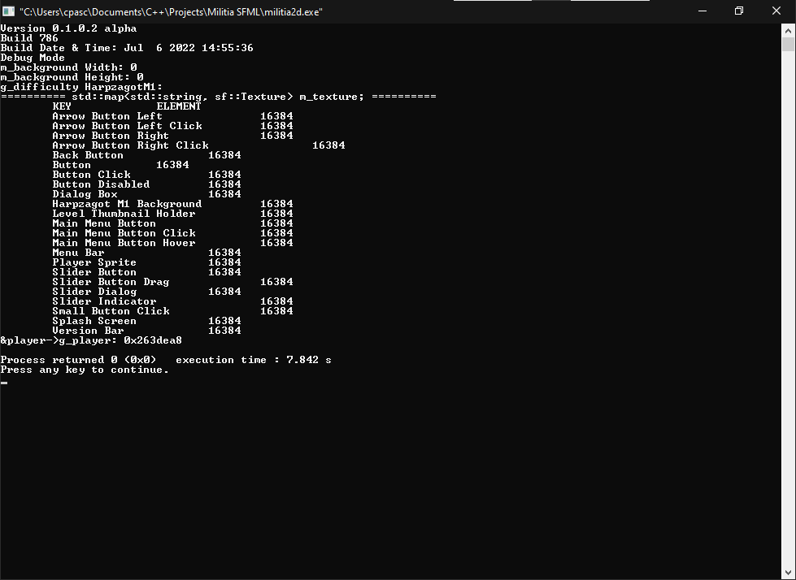<br>
				</div>
			<h2>Build 787: July 8, 2022 - 17:47:07 / 17:47:41 phroton/feature/list-map-input-engine (developer mode)</h2>
				<li>Re-enabled developer mode.</li>
				<li>Added AllocConsole() but it didn't work.</li>
			<h2>Build 788: July 8, 2022 - 18:08:03 / 18:08:53 phroton/feature/list-map-input-engine (developer mode)</h2>
				<li>Added prototype code to perform an input on console.</li>
				<li>Only <code>-info</code> works.</li>
				<li>The game does not run unless an input has been taken.</li>
				<br><button onclick='showImage("info-788")'>Show Image</button><br><br>
				<div class="imgDiv" id="info-788">
					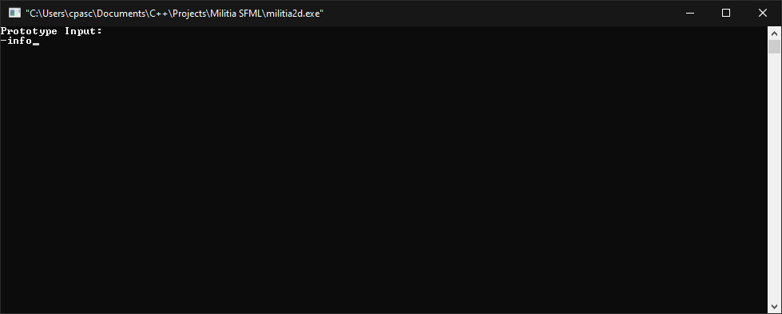<br>
					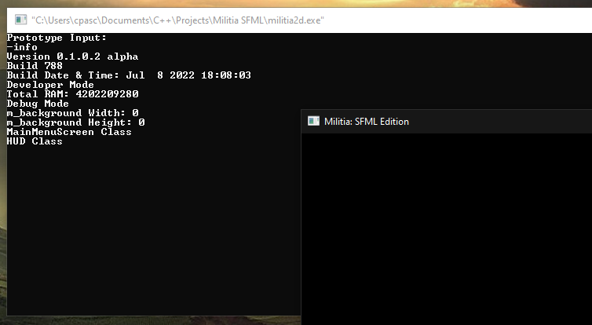<br>
				</div>
			<h2>Build 789: phroton/feature/list-map-input-engine (developer mode)</h2>
				<h3>July 9, 2022 - 12:13:49</h3>
				<pre>||=== Build: default in militia2d (compiler: GNU GCC Compiler) ===|
\Militia SFML\engine\resource-engine.cpp||In member function 'void Dzergero::ResourceEngine::ListAudios()':|
\Militia SFML\engine\resource-engine.cpp|68|error: no match for 'operator=' (operand types are 'std::map<std::__cxx11::basic_string<char>, sf::SoundBuffer>::iterator' {aka 'std::_Rb_tree_iterator<std::pair<const std::__cxx11::basic_string<char>, sf::SoundBuffer> >'} and 'std::map<std::__cxx11::basic_string<char>, sf::Texture>::iterator' {aka 'std::_Rb_tree_iterator<std::pair<const std::__cxx11::basic_string<char>, sf::Texture> >'})|
C:\Program Files\CodeBlocks\MinGW\lib\gcc\x86_64-w64-mingw32\8.1.0\include\c++\bits\stl_tree.h|256|note: candidate: 'constexpr std::_Rb_tree_iterator<std::pair<const std::__cxx11::basic_string<char>, sf::SoundBuffer> >& std::_Rb_tree_iterator<std::pair<const std::__cxx11::basic_string<char>, sf::SoundBuffer> >::operator=(const std::_Rb_tree_iterator<std::pair<const std::__cxx11::basic_string<char>, sf::SoundBuffer> >&)'|
C:\Program Files\CodeBlocks\MinGW\lib\gcc\x86_64-w64-mingw32\8.1.0\include\c++\bits\stl_tree.h|256|note:   no known conversion for argument 1 from 'std::map<std::__cxx11::basic_string<char>, sf::Texture>::iterator' {aka 'std::_Rb_tree_iterator<std::pair<const std::__cxx11::basic_string<char>, sf::Texture> >'} to 'const std::_Rb_tree_iterator<std::pair<const std::__cxx11::basic_string<char>, sf::SoundBuffer> >&'|
C:\Program Files\CodeBlocks\MinGW\lib\gcc\x86_64-w64-mingw32\8.1.0\include\c++\bits\stl_tree.h|256|note: candidate: 'constexpr std::_Rb_tree_iterator<std::pair<const std::__cxx11::basic_string<char>, sf::SoundBuffer> >& std::_Rb_tree_iterator<std::pair<const std::__cxx11::basic_string<char>, sf::SoundBuffer> >::operator=(std::_Rb_tree_iterator<std::pair<const std::__cxx11::basic_string<char>, sf::SoundBuffer> >&&)'|
C:\Program Files\CodeBlocks\MinGW\lib\gcc\x86_64-w64-mingw32\8.1.0\include\c++\bits\stl_tree.h|256|note:   no known conversion for argument 1 from 'std::map<std::__cxx11::basic_string<char>, sf::Texture>::iterator' {aka 'std::_Rb_tree_iterator<std::pair<const std::__cxx11::basic_string<char>, sf::Texture> >'} to 'std::_Rb_tree_iterator<std::pair<const std::__cxx11::basic_string<char>, sf::SoundBuffer> >&&'|
\Militia SFML\engine\resource-engine.cpp|75|error: 'unsigned int sf::SoundBuffer::m_buffer' is private within this context|
C:\sfml\include\SFML\Audio\SoundBuffer.hpp|275|note: declared private here|
\Militia SFML\engine\resource-engine.cpp||In member function 'void Dzergero::ResourceEngine::ListFonts()':|
\Militia SFML\engine\resource-engine.cpp|83|error: no match for 'operator=' (operand types are 'std::map<std::__cxx11::basic_string<char>, sf::Font>::iterator' {aka 'std::_Rb_tree_iterator<std::pair<const std::__cxx11::basic_string<char>, sf::Font> >'} and 'std::map<std::__cxx11::basic_string<char>, sf::Texture>::iterator' {aka 'std::_Rb_tree_iterator<std::pair<const std::__cxx11::basic_string<char>, sf::Texture> >'})|
C:\Program Files\CodeBlocks\MinGW\lib\gcc\x86_64-w64-mingw32\8.1.0\include\c++\bits\stl_tree.h|256|note: candidate: 'constexpr std::_Rb_tree_iterator<std::pair<const std::__cxx11::basic_string<char>, sf::Font> >& std::_Rb_tree_iterator<std::pair<const std::__cxx11::basic_string<char>, sf::Font> >::operator=(const std::_Rb_tree_iterator<std::pair<const std::__cxx11::basic_string<char>, sf::Font> >&)'|
C:\Program Files\CodeBlocks\MinGW\lib\gcc\x86_64-w64-mingw32\8.1.0\include\c++\bits\stl_tree.h|256|note:   no known conversion for argument 1 from 'std::map<std::__cxx11::basic_string<char>, sf::Texture>::iterator' {aka 'std::_Rb_tree_iterator<std::pair<const std::__cxx11::basic_string<char>, sf::Texture> >'} to 'const std::_Rb_tree_iterator<std::pair<const std::__cxx11::basic_string<char>, sf::Font> >&'|
C:\Program Files\CodeBlocks\MinGW\lib\gcc\x86_64-w64-mingw32\8.1.0\include\c++\bits\stl_tree.h|256|note: candidate: 'constexpr std::_Rb_tree_iterator<std::pair<const std::__cxx11::basic_string<char>, sf::Font> >& std::_Rb_tree_iterator<std::pair<const std::__cxx11::basic_string<char>, sf::Font> >::operator=(std::_Rb_tree_iterator<std::pair<const std::__cxx11::basic_string<char>, sf::Font> >&&)'|
C:\Program Files\CodeBlocks\MinGW\lib\gcc\x86_64-w64-mingw32\8.1.0\include\c++\bits\stl_tree.h|256|note:   no known conversion for argument 1 from 'std::map<std::__cxx11::basic_string<char>, sf::Texture>::iterator' {aka 'std::_Rb_tree_iterator<std::pair<const std::__cxx11::basic_string<char>, sf::Texture> >'} to 'std::_Rb_tree_iterator<std::pair<const std::__cxx11::basic_string<char>, sf::Font> >&&'|
\Militia SFML\engine\resource-engine.cpp|90|error: 'sf::Font::Info sf::Font::m_info' is private within this context|
C:\sfml\include\SFML\Graphics\Font.hpp|354|note: declared private here|
\Militia SFML\engine\resource-engine.cpp|90|error: no matching function for call to 'std::__cxx11::basic_string<char>::basic_string(sf::Font::Info&)'|
C:\Program Files\CodeBlocks\MinGW\lib\gcc\x86_64-w64-mingw32\8.1.0\include\c++\bits\basic_string.h|639|note: candidate: 'std::__cxx11::basic_string<_CharT, _Traits, _Alloc>::basic_string(std::__cxx11::basic_string<_CharT, _Traits, _Alloc>::__sv_wrapper, const _Alloc&) [with _CharT = char; _Traits = std::char_traits<char>; _Alloc = std::allocator<char>]'|
C:\Program Files\CodeBlocks\MinGW\lib\gcc\x86_64-w64-mingw32\8.1.0\include\c++\bits\basic_string.h|639|note:   candidate expects 2 arguments, 1 provided|
C:\Program Files\CodeBlocks\MinGW\lib\gcc\x86_64-w64-mingw32\8.1.0\include\c++\bits\basic_string.h|629|note: candidate: 'template<class _Tp, class> std::__cxx11::basic_string<_CharT, _Traits, _Alloc>::basic_string(const _Tp&, const _Alloc&)'|
C:\Program Files\CodeBlocks\MinGW\lib\gcc\x86_64-w64-mingw32\8.1.0\include\c++\bits\basic_string.h|629|note:   template argument deduction/substitution failed:|
C:\Program Files\CodeBlocks\MinGW\lib\gcc\x86_64-w64-mingw32\8.1.0\include\c++\bits\basic_string.h|618|note: candidate: 'template<class _Tp, class> std::__cxx11::basic_string<_CharT, _Traits, _Alloc>::basic_string(const _Tp&, std::__cxx11::basic_string<_CharT, _Traits, _Alloc>::size_type, std::__cxx11::basic_string<_CharT, _Traits, _Alloc>::size_type, const _Alloc&)'|
C:\Program Files\CodeBlocks\MinGW\lib\gcc\x86_64-w64-mingw32\8.1.0\include\c++\bits\basic_string.h|618|note:   template argument deduction/substitution failed:|
\Militia SFML\engine\resource-engine.cpp|90|note:   candidate expects 4 arguments, 1 provided|
C:\Program Files\CodeBlocks\MinGW\lib\gcc\x86_64-w64-mingw32\8.1.0\include\c++\bits\basic_string.h|604|note: candidate: 'template<class _InputIterator, class> std::__cxx11::basic_string<_CharT, _Traits, _Alloc>::basic_string(_InputIterator, _InputIterator, const _Alloc&)'|
C:\Program Files\CodeBlocks\MinGW\lib\gcc\x86_64-w64-mingw32\8.1.0\include\c++\bits\basic_string.h|604|note:   template argument deduction/substitution failed:|
\Militia SFML\engine\resource-engine.cpp|90|note:   candidate expects 3 arguments, 1 provided|
C:\Program Files\CodeBlocks\MinGW\lib\gcc\x86_64-w64-mingw32\8.1.0\include\c++\bits\basic_string.h|566|note: candidate: 'std::__cxx11::basic_string<_CharT, _Traits, _Alloc>::basic_string(std::__cxx11::basic_string<_CharT, _Traits, _Alloc>&&, const _Alloc&) [with _CharT = char; _Traits = std::char_traits<char>; _Alloc = std::allocator<char>]'|
C:\Program Files\CodeBlocks\MinGW\lib\gcc\x86_64-w64-mingw32\8.1.0\include\c++\bits\basic_string.h|566|note:   candidate expects 2 arguments, 1 provided|
C:\Program Files\CodeBlocks\MinGW\lib\gcc\x86_64-w64-mingw32\8.1.0\include\c++\bits\basic_string.h|562|note: candidate: 'std::__cxx11::basic_string<_CharT, _Traits, _Alloc>::basic_string(const std::__cxx11::basic_string<_CharT, _Traits, _Alloc>&, const _Alloc&) [with _CharT = char; _Traits = std::char_traits<char>; _Alloc = std::allocator<char>]'|
C:\Program Files\CodeBlocks\MinGW\lib\gcc\x86_64-w64-mingw32\8.1.0\include\c++\bits\basic_string.h|562|note:   candidate expects 2 arguments, 1 provided|
C:\Program Files\CodeBlocks\MinGW\lib\gcc\x86_64-w64-mingw32\8.1.0\include\c++\bits\basic_string.h|558|note: candidate: 'std::__cxx11::basic_string<_CharT, _Traits, _Alloc>::basic_string(std::initializer_list<_Tp>, const _Alloc&) [with _CharT = char; _Traits = std::char_traits<char>; _Alloc = std::allocator<char>]'|
C:\Program Files\CodeBlocks\MinGW\lib\gcc\x86_64-w64-mingw32\8.1.0\include\c++\bits\basic_string.h|558|note:   no known conversion for argument 1 from 'sf::Font::Info' to 'std::initializer_list<char>'|
C:\Program Files\CodeBlocks\MinGW\lib\gcc\x86_64-w64-mingw32\8.1.0\include\c++\bits\basic_string.h|531|note: candidate: 'std::__cxx11::basic_string<_CharT, _Traits, _Alloc>::basic_string(std::__cxx11::basic_string<_CharT, _Traits, _Alloc>&&) [with _CharT = char; _Traits = std::char_traits<char>; _Alloc = std::allocator<char>]'|
C:\Program Files\CodeBlocks\MinGW\lib\gcc\x86_64-w64-mingw32\8.1.0\include\c++\bits\basic_string.h|531|note:   no known conversion for argument 1 from 'sf::Font::Info' to 'std::__cxx11::basic_string<char>&&'|
C:\Program Files\CodeBlocks\MinGW\lib\gcc\x86_64-w64-mingw32\8.1.0\include\c++\bits\basic_string.h|519|note: candidate: 'std::__cxx11::basic_string<_CharT, _Traits, _Alloc>::basic_string(std::__cxx11::basic_string<_CharT, _Traits, _Alloc>::size_type, _CharT, const _Alloc&) [with _CharT = char; _Traits = std::char_traits<char>; _Alloc = std::allocator<char>; std::__cxx11::basic_string<_CharT, _Traits, _Alloc>::size_type = long long unsigned int]'|
C:\Program Files\CodeBlocks\MinGW\lib\gcc\x86_64-w64-mingw32\8.1.0\include\c++\bits\basic_string.h|519|note:   candidate expects 3 arguments, 1 provided|
C:\Program Files\CodeBlocks\MinGW\lib\gcc\x86_64-w64-mingw32\8.1.0\include\c++\bits\basic_string.h|509|note: candidate: 'std::__cxx11::basic_string<_CharT, _Traits, _Alloc>::basic_string(const _CharT*, const _Alloc&) [with _CharT = char; _Traits = std::char_traits<char>; _Alloc = std::allocator<char>]'|
C:\Program Files\CodeBlocks\MinGW\lib\gcc\x86_64-w64-mingw32\8.1.0\include\c++\bits\basic_string.h|509|note:   no known conversion for argument 1 from 'sf::Font::Info' to 'const char*'|
C:\Program Files\CodeBlocks\MinGW\lib\gcc\x86_64-w64-mingw32\8.1.0\include\c++\bits\basic_string.h|499|note: candidate: 'std::__cxx11::basic_string<_CharT, _Traits, _Alloc>::basic_string(const _CharT*, std::__cxx11::basic_string<_CharT, _Traits, _Alloc>::size_type, const _Alloc&) [with _CharT = char; _Traits = std::char_traits<char>; _Alloc = std::allocator<char>; std::__cxx11::basic_string<_CharT, _Traits, _Alloc>::size_type = long long unsigned int]'|
C:\Program Files\CodeBlocks\MinGW\lib\gcc\x86_64-w64-mingw32\8.1.0\include\c++\bits\basic_string.h|499|note:   candidate expects 3 arguments, 1 provided|
C:\Program Files\CodeBlocks\MinGW\lib\gcc\x86_64-w64-mingw32\8.1.0\include\c++\bits\basic_string.h|481|note: candidate: 'std::__cxx11::basic_string<_CharT, _Traits, _Alloc>::basic_string(const std::__cxx11::basic_string<_CharT, _Traits, _Alloc>&, std::__cxx11::basic_string<_CharT, _Traits, _Alloc>::size_type, std::__cxx11::basic_string<_CharT, _Traits, _Alloc>::size_type, const _Alloc&) [with _CharT = char; _Traits = std::char_traits<char>; _Alloc = std::allocator<char>; std::__cxx11::basic_string<_CharT, _Traits, _Alloc>::size_type = long long unsigned int]'|
C:\Program Files\CodeBlocks\MinGW\lib\gcc\x86_64-w64-mingw32\8.1.0\include\c++\bits\basic_string.h|481|note:   candidate expects 4 arguments, 1 provided|
C:\Program Files\CodeBlocks\MinGW\lib\gcc\x86_64-w64-mingw32\8.1.0\include\c++\bits\basic_string.h|465|note: candidate: 'std::__cxx11::basic_string<_CharT, _Traits, _Alloc>::basic_string(const std::__cxx11::basic_string<_CharT, _Traits, _Alloc>&, std::__cxx11::basic_string<_CharT, _Traits, _Alloc>::size_type, std::__cxx11::basic_string<_CharT, _Traits, _Alloc>::size_type) [with _CharT = char; _Traits = std::char_traits<char>; _Alloc = std::allocator<char>; std::__cxx11::basic_string<_CharT, _Traits, _Alloc>::size_type = long long unsigned int]'|
C:\Program Files\CodeBlocks\MinGW\lib\gcc\x86_64-w64-mingw32\8.1.0\include\c++\bits\basic_string.h|465|note:   candidate expects 3 arguments, 1 provided|
C:\Program Files\CodeBlocks\MinGW\lib\gcc\x86_64-w64-mingw32\8.1.0\include\c++\bits\basic_string.h|450|note: candidate: 'std::__cxx11::basic_string<_CharT, _Traits, _Alloc>::basic_string(const std::__cxx11::basic_string<_CharT, _Traits, _Alloc>&, std::__cxx11::basic_string<_CharT, _Traits, _Alloc>::size_type, const _Alloc&) [with _CharT = char; _Traits = std::char_traits<char>; _Alloc = std::allocator<char>; std::__cxx11::basic_string<_CharT, _Traits, _Alloc>::size_type = long long unsigned int]'|
C:\Program Files\CodeBlocks\MinGW\lib\gcc\x86_64-w64-mingw32\8.1.0\include\c++\bits\basic_string.h|450|note:   candidate expects 3 arguments, 1 provided|
C:\Program Files\CodeBlocks\MinGW\lib\gcc\x86_64-w64-mingw32\8.1.0\include\c++\bits\basic_string.h|437|note: candidate: 'std::__cxx11::basic_string<_CharT, _Traits, _Alloc>::basic_string(const std::__cxx11::basic_string<_CharT, _Traits, _Alloc>&) [with _CharT = char; _Traits = std::char_traits<char>; _Alloc = std::allocator<char>]'|
C:\Program Files\CodeBlocks\MinGW\lib\gcc\x86_64-w64-mingw32\8.1.0\include\c++\bits\basic_string.h|437|note:   no known conversion for argument 1 from 'sf::Font::Info' to 'const std::__cxx11::basic_string<char>&'|
C:\Program Files\CodeBlocks\MinGW\lib\gcc\x86_64-w64-mingw32\8.1.0\include\c++\bits\basic_string.h|429|note: candidate: 'std::__cxx11::basic_string<_CharT, _Traits, _Alloc>::basic_string(const _Alloc&) [with _CharT = char; _Traits = std::char_traits<char>; _Alloc = std::allocator<char>]'|
C:\Program Files\CodeBlocks\MinGW\lib\gcc\x86_64-w64-mingw32\8.1.0\include\c++\bits\basic_string.h|429|note:   no known conversion for argument 1 from 'sf::Font::Info' to 'const std::allocator<char>&'|
C:\Program Files\CodeBlocks\MinGW\lib\gcc\x86_64-w64-mingw32\8.1.0\include\c++\bits\basic_string.h|420|note: candidate: 'std::__cxx11::basic_string<_CharT, _Traits, _Alloc>::basic_string() [with _CharT = char; _Traits = std::char_traits<char>; _Alloc = std::allocator<char>]'|
C:\Program Files\CodeBlocks\MinGW\lib\gcc\x86_64-w64-mingw32\8.1.0\include\c++\bits\basic_string.h|420|note:   candidate expects 0 arguments, 1 provided|
\Militia SFML\engine\resource-engine.cpp||In member function 'void Dzergero::ResourceEngine::ListTextures()':|
\Militia SFML\engine\resource-engine.cpp|107|error: 'unsigned int sf::Texture::m_texture' is private within this context|
C:\sfml\include\SFML\Graphics\Texture.hpp|621|note: declared private here|
||=== Build finished: 6 error(s), 0 warning(s) (0 minute(s), 47 second(s)) ===|
</pre>
				<h3>July 9, 2022 - 12:13:50 / 12:41:48</h3>
				<li>Map for Audio and Font can now be listed on debug console through ListAudios() and ListFonts().</li>
				<li>Removed prototype code for console input.</li>
				<li>Size of m_texture is now displayed instead of it's maximum size.</li>
				<li>Renamed ListTexture() to ListTextures().</li>
				<br><button onclick='showImage("info-789")'>Show Image</button><br><br>
				<div class="imgDiv" id="info-789">
					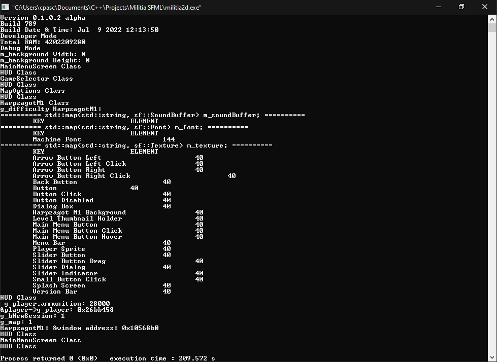<br>
				</div>
			<h2>Build 790: phroton/feature/list-map-input-engine (developer mode)</h2>
				<h3>July 9, 2022 - 17:13:54</h3>
				<pre>||=== Build: default in militia2d (compiler: GNU GCC Compiler) ===|
\Militia SFML\main.cpp||In function 'int main(int, char**, char**)':|
\Militia SFML\main.cpp|22|error: expected ';' before 'std'|
\Militia SFML\main.cpp|41|error: 'index' was not declared in this scope|
||=== Build finished: 2 error(s), 0 warning(s) (0 minute(s), 51 second(s)) ===|
</pre>
				<h3>July 9, 2022 - 17:15:12 / 17:15:29</h3>
				<li>Tried adding another prototype code for command line input, but it failed. The game did not even load.</li>
				<br><button onclick='showImage("info-790")'>Show Image</button><br><br>
				<div class="imgDiv" id="info-790">
					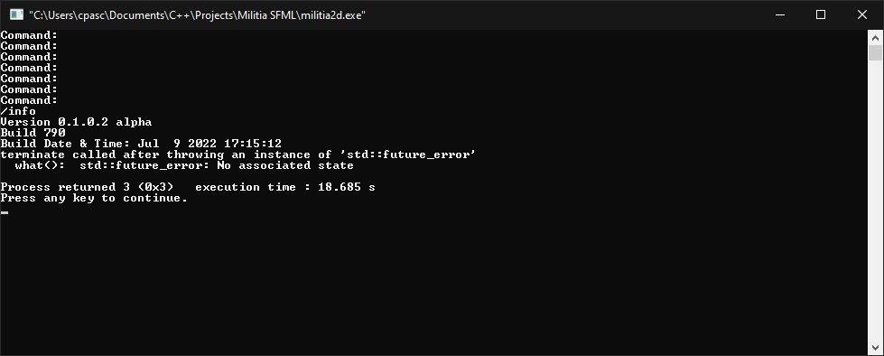<br>
				</div>
			<h2>Build 791: July 9, 2022 - 17:27:55 / 17:28:24 phroton/feature/list-map-input-engine (developer mode)</h2>
				<li>Made some changes in the prototype code for command input, but the code only runs after the game has exited.</li>
				<br><button onclick='showImage("info-791")'>Show Image</button><br><br>
				<div class="imgDiv" id="info-791">
					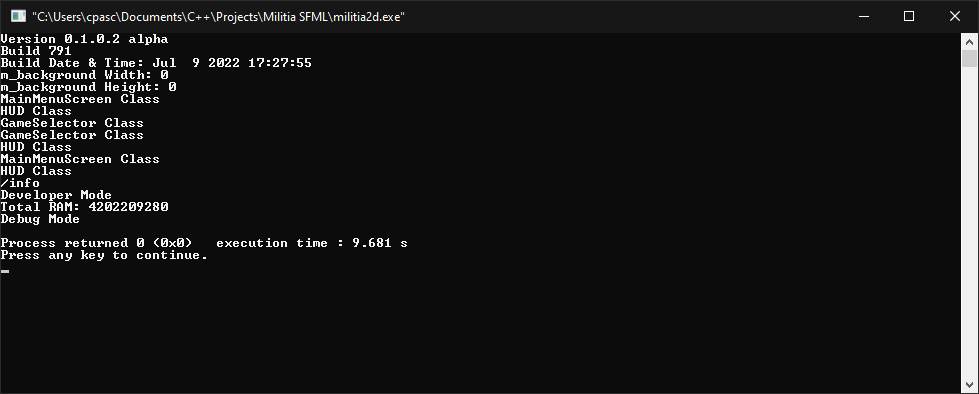<br>
				</div>
			<h2>Build 792: phroton/feature/list-map-input-engine (developer mode)</h2>
				<h3>July 9, 2022 - 17:53:33</h3>
				<pre>||=== Build: default in militia2d (compiler: GNU GCC Compiler) ===|
\Militia SFML\common\debug.h|9|fatal error: definitions/GAMEINFO.h: No such file or directory|
\Militia SFML\common\debug.h|9|fatal error: definitions/GAMEINFO.h: No such file or directory|
||=== Build finished: 2 error(s), 0 warning(s) (0 minute(s), 13 second(s)) ===|
</pre>
				<h3>July 9, 2022 - 17:54:45</h3>
				<pre>||=== Build: default in militia2d (compiler: GNU GCC Compiler) ===|
\Militia SFML\common\debug.h|17|fatal error: common/game-data.h: No such file or directory|
\Militia SFML\common\debug.h|17|fatal error: common/game-data.h: No such file or directory|
\Militia SFML\common\debug.h|17|fatal error: common/game-data.h: No such file or directory|
||=== Build finished: 3 error(s), 0 warning(s) (0 minute(s), 11 second(s)) ===|
</pre>
				<h3>July 9, 2022 - 17:56:03</h3>
				<pre>||=== Build: default in militia2d (compiler: GNU GCC Compiler) ===|
\Militia SFML\main.cpp||In function 'int main(int, char**, char**)':|
\Militia SFML\main.cpp|33|error: 'Debug' was not declared in this scope|
\Militia SFML\main.cpp|33|note: suggested alternative:|
\Militia SFML\common\debug.h|21|note:   'Phroton::Debug'|
\Militia SFML\main.cpp|34|error: 'debug' was not declared in this scope|
\Militia SFML\main.cpp|34|note: suggested alternative: 'setbuf'|
||=== Build finished: 2 error(s), 0 warning(s) (0 minute(s), 47 second(s)) ===|
</pre>
				<h3>July 9, 2022 - 17:59:16 / 17:59:45</h3>
				<li>Moved prototype code for console input to Debug() constructor.</li>
				<li>The change caused pause when trying to open the game when an input has been not taken.</li>
				<br><button onclick='showImage("info-792")'>Show Image</button><br><br>
				<div class="imgDiv" id="info-792">
					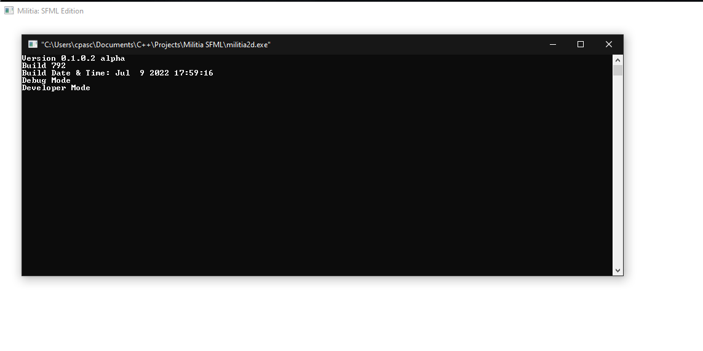<br>
					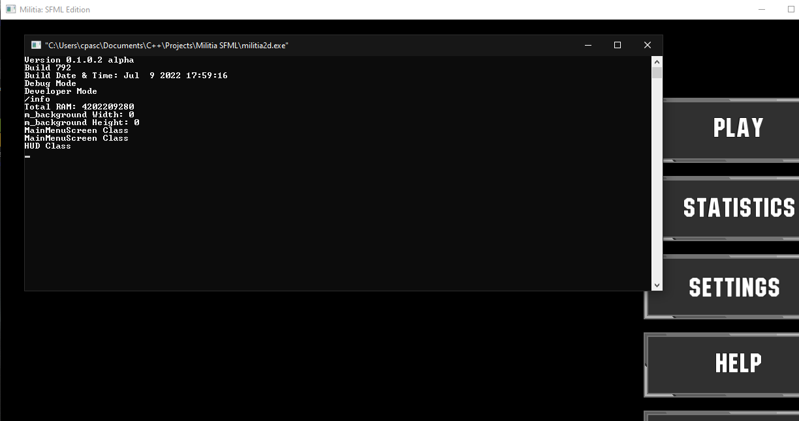<br>
				</div>
			<h2>Build 793: phroton/feature/list-map-input-engine (developer mode)</h2>
				<h3>July 10, 2022 - 17:17:46</h3>
				<li>Added dependency: ConsoleLogger.h</li>
				<li>Tried using an external library called ConsoleLogger.h.</li>
				<pre>||=== Build: default in militia2d (compiler: GNU GCC Compiler) ===|
\Militia SFML\main.cpp||In function 'int main(int, char**, char**)':|
\Militia SFML\main.cpp|18|error: cannot convert 'const wchar_t*' to 'LPCSTR' {aka 'const char*'}|
C:\Program Files\CodeBlocks\MinGW\x86_64-w64-mingw32\include\wincon.h|255|note:   initializing argument 1 of 'WINBOOL SetConsoleTitleA(LPCSTR)'|
||=== Build finished: 1 error(s), 0 warning(s) (1 minute(s), 26 second(s)) ===|
</pre>
				<h3>July 10, 2022 - 17:19:08</h3>
				<li>Failed to compile the game while using ConsoleLogger.h.</li>
				<li>Removed dependency: ConsoleLogger.h</li>
				<pre>||=== Build: default in militia2d (compiler: GNU GCC Compiler) ===|
obj\main.o:main.cpp:(.text.startup+0x2b3)||undefined reference to `CConsoleLoggerEx::CConsoleLoggerEx()'|
obj\main.o:main.cpp:(.text.startup+0x2dd)||undefined reference to `CConsoleLogger::Create(char const*, int, int, char const*, char const*)'|
obj\main.o:main.cpp:(.text.startup+0x2ff)||undefined reference to `CConsoleLogger::printf(char const*, ...)'|
obj\main.o:main.cpp:(.text.startup+0x39f)||undefined reference to `CConsoleLogger::~CConsoleLogger()'|
obj\main.o:main.cpp:(.text.startup+0x438)||undefined reference to `CConsoleLogger::~CConsoleLogger()'|
obj\main.o:main.cpp:(.rdata$.refptr._ZTV16CConsoleLoggerEx[.refptr._ZTV16CConsoleLoggerEx]+0x0)||undefined reference to `vtable for CConsoleLoggerEx'|
||error: ld returned 1 exit status|
||=== Build failed: 7 error(s), 0 warning(s) (0 minute(s), 21 second(s)) ===|
</pre>
				<h3>July 10, 2022 - 17:24:30 / 17:24:46</h3>
				<li>Added title to console window: "Militia SFML Debug Console"</li>
				<li>Disabled prototype code for console input because it freezes the game.</li>
				<li>Moved prototype code for console input to developer mode.</li>
				<li>Updated version bar to show v0.1.0.2 alpha instead of v0.1.0.1 alpha, but spacing issue occurs between the version and build number.</li>
				<br><button onclick='showImage("info-793")'>Show Image</button><br><br>
				<div class="imgDiv" id="info-793">
					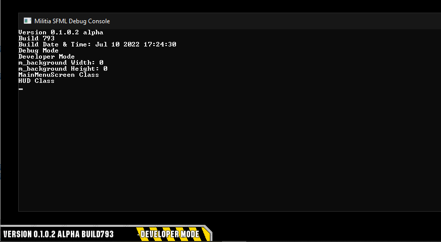<br>
				</div>
			<h2>Build 794: July 10, 2022 - 18:11:34 / 18:12:09 phroton/feature/list-map-input-engine -> dev (developer mode)</h2>
				<li>Added more spacing between version and build number in version bar.</li>
				<li>List maps has been moved to developer mode.</li>
				<li>A sudden freeze has occured while entering HarpzagotM1.</li>
				<br><button onclick='showImage("info-794")'>Show Image</button><br><br>
				<div class="imgDiv" id="info-794">
					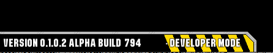<br>
					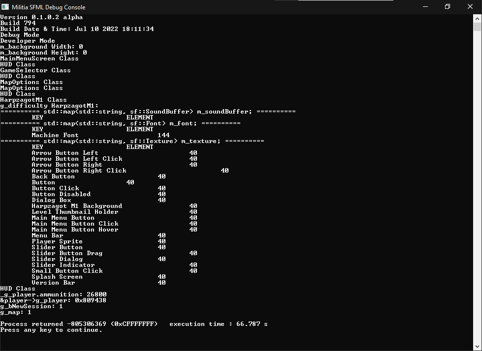<br>
					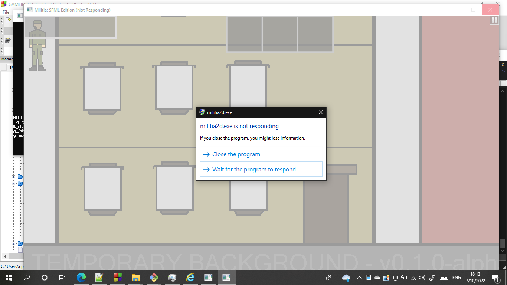<br>
				</div>
			<h2>Build 795: July 11, 2022 - 17:32:55 / 17:33:28 phroton/feature-46/hud-class-to-gui -> dev (developer mode)</h2>
				<li>Renamed HUD class to GUI class and renamed all objects from _hud to _gui.</li>
				<li>Added public Inheritance of Dzergero::State to GUI Class.</li>
				<br><button onclick='showImage("info-795")'>Show Image</button><br><br>
				<div class="imgDiv" id="info-795">
					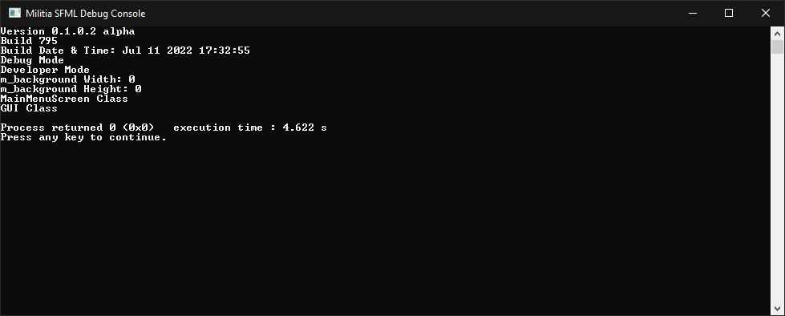<br>
				</div>
			<h2>Build 796: phroton/feature-46/gui-layering (developer mode)</h2>
				<h3>July 11, 2022 - 17:40 to 18:40</h3>
				<li>Started thinking about using vectors instead of having seperate objects per header file.</li>
		</ul>
	</body>
</html>